Trace without pain: Tracing transactions with OpenTelemetry auto-instrumentation
What is Distributed Tracing?
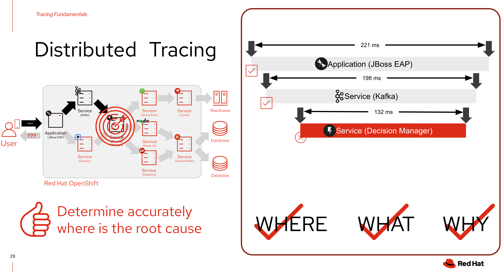
Distributed tracing is a technique that helps developers and operators understand how requests flow through distributed systems, especially those built with microservices. It provides a comprehensive view of a request’s journey across different services, including the time taken at each step and any errors encountered.
As a service owner, you can use distributed tracing to instrument your services to gather insights into your service architecture. You can use the Red Hat OpenShift distributed tracing platform for monitoring, network profiling, and troubleshooting the interaction between components in modern, cloud-native, microservices-based applications.
With the distributed tracing platform, you can perform the following functions:
-
Monitor distributed transactions
-
Optimize performance and latency
-
Perform root cause analysis
You can use the Red Hat OpenShift distributed tracing platform (Tempo) in combination with the Red Hat build of OpenTelemetry to setup distributed tracing platform in OpenShift for your applications.
Red Hat OpenShift distributed tracing platform features
Red Hat OpenShift distributed tracing platform provides the following capabilities:
-
Integration with Kiali — When properly configured, you can view distributed tracing platform data from the Kiali console.
-
High scalability — The distributed tracing platform back end is designed to have no single points of failure and to scale with the business needs.
-
Distributed Context Propagation — Enables you to connect data from different components together to create a complete end-to-end trace.
-
Backwards compatibility with Zipkin — Red Hat OpenShift distributed tracing platform has APIs that enable it to be used as a drop-in replacement for Zipkin, but Red Hat is not supporting Zipkin compatibility in this release.
Red Hat OpenShift distributed tracing platform architecture
Red Hat OpenShift distributed tracing platform is made up of several components that work together to collect, store, and display tracing data.
Red Hat OpenShift distributed tracing platform (Tempo)
This component is based on the open source Grafana Tempo project.
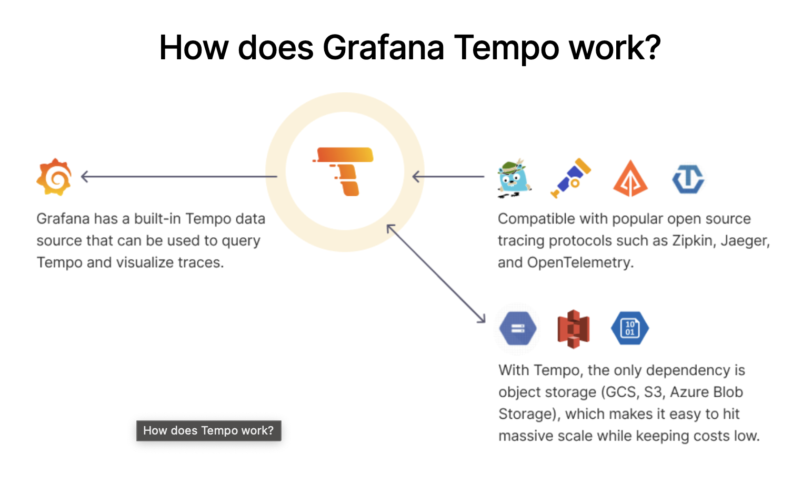
-
Gateway — The Gateway handles authentication, authorization, and forwarding requests to the Distributor or Query Frontend service.
-
Distributor — The Distributor accepts spans in multiple formats including Jaeger, OpenTelemetry, and Zipkin. It routes spans to Ingesters by hashing the traceID and using a distributed consistent hash ring.
-
Ingester — The Ingester batches a trace into blocks, creates bloom filters and indexes, and then flushes it all to the back end.
-
Query Frontend — The Query Frontend is responsible for sharding the search space for an incoming query. The search query is then sent to the Queriers. The Query Frontend deployment exposes the Jaeger UI through the Tempo Query sidecar.
-
Querier - The Querier is responsible for finding the requested trace ID in either the Ingesters or the back-end storage. Depending on parameters, it can query the Ingesters and pull Bloom indexes from the back end to search blocks in object storage.
-
Compactor — The Compactors stream blocks to and from the back-end storage to reduce the total number of blocks.
Red Hat build of OpenTelemetry
This component is based on the open source OpenTelemetry project.
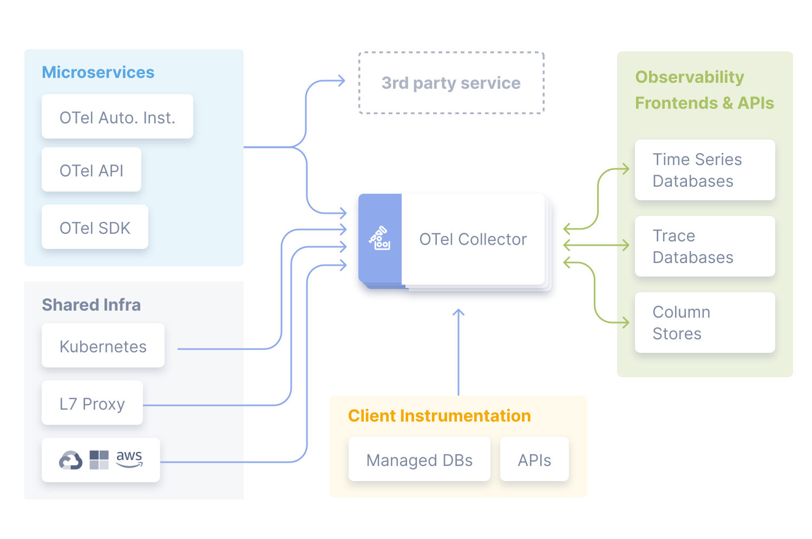
-
OpenTelemetry Collector - The OpenTelemetry Collector is a vendor-agnostic way to receive, process, and export telemetry data. The OpenTelemetry Collector supports open-source observability data formats, for example, Jaeger and Prometheus, sending to one or more open-source or commercial back-ends. The Collector is the default location instrumentation libraries export their telemetry data.
Create Tempo instance - Tempo Monolithic
In Tempo Monolithic mode all core components such as compactor, distributor, ingester, querier, and query-frontend of Tempo are contained in a single binary, in a single container. This vastly simplifies the deployment, as only a single pod is created, and avoids potential issues arising from distributed deployments such as connectivity issues between pods or nodes, scheduling issues, etc.
Additionally, this mode supports storing traces in-memory, and in a Persistent Volume. However, this mode comes at the expense of scalability: this mode does not scale horizontally. To scale your Tempo deployment horizontally, continue using the Tempo Microservices deployment via the TempoStack Custom Resource (CR).
The Monolithic mode is ideal for small deployments, demo and test setups, and is the recommended migration path of the Red Hat OpenShift distributed tracing platform (Jaeger) all-in-one deployment.
Follow these steps to create Tempo instance in monolithic mode.
-
In OpenShift console, change Project to
userX-otelthat matches to your username.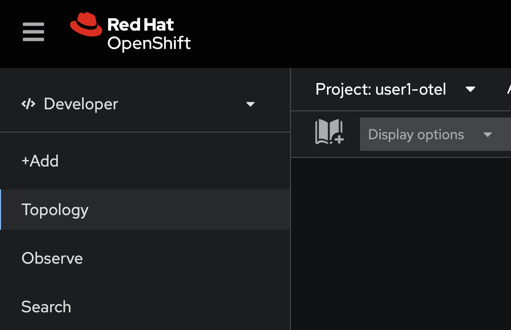
-
Click on the + button at the top right corner of console, then select Import YAML.

-
Copy all YAML code from this https://github.com/rhthsa/developer-advocacy-2025/blob/main/config/otel/tempoMonolithic.yaml and paste to YAML editor in OpenShift console. Then click Create button.
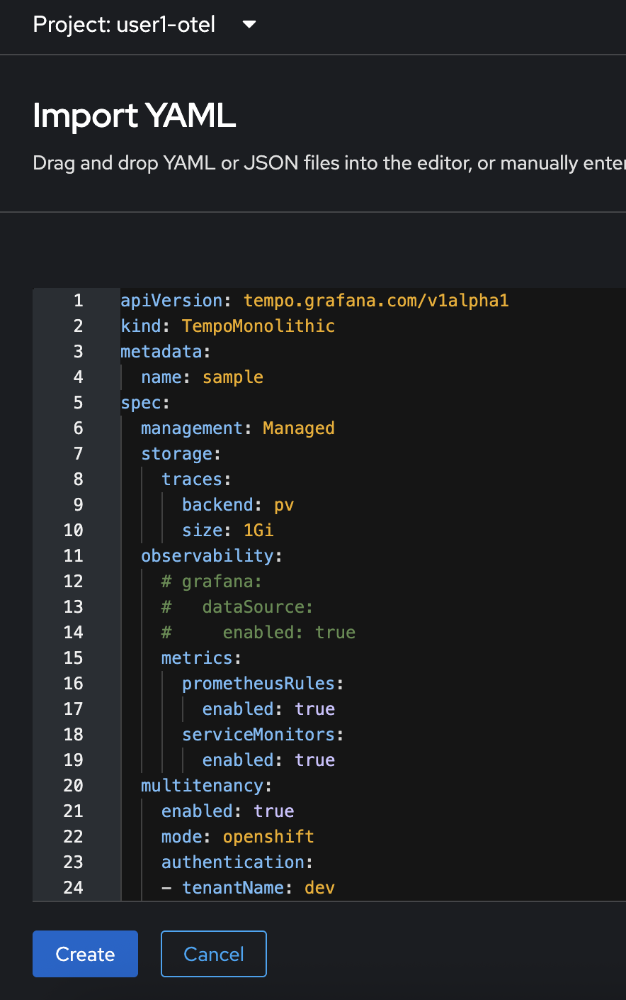
-
The
TempoMonolithicresource should be created.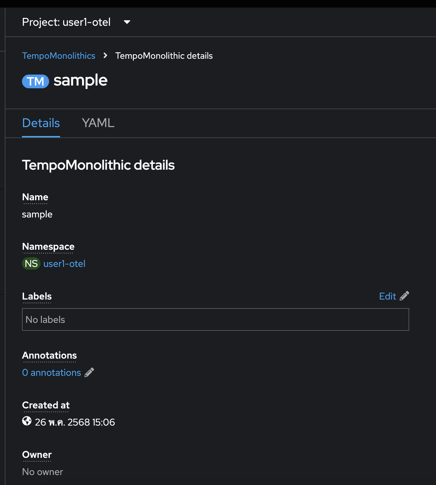
-
Go to Topology menu, click on
tempo-sampleentity, go to the Resources tab in the right panel then wait until thetempo-sample-0Pod status changes toRunning.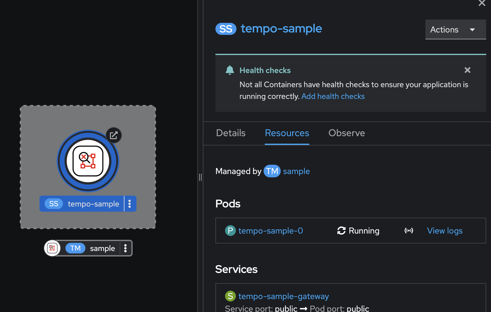
Create OpenTelemetry (OTel) Collector
-
Click on the + button at the top right corner of console, then select Import YAML.
-
Copy all YAML code from https://github.com/rhthsa/developer-advocacy-2025/blob/main/config/otel/otel-collector-multi-tenant.yaml and paste to YAML editor in OpenShift console.
Update the
userXin the value ofserver_name_overridefield to your username. Then click Create button.Don’t forget to update the userXin the value ofserver_name_overridefield to your username.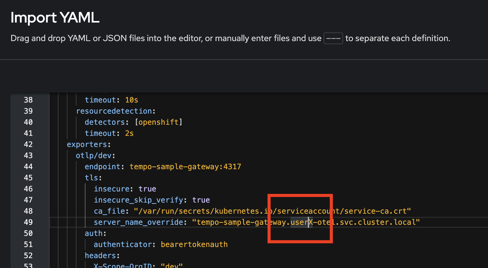
-
The
OpenTelemetryCollectorshould be created.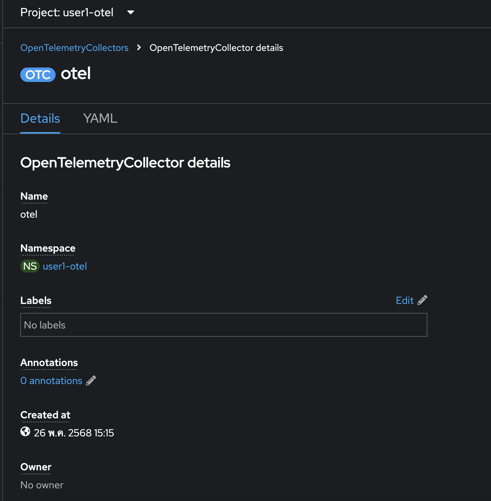
-
Go to Topology menu, you should see
otel-collectordeployment. Click on it then go to the Resources tab in the right panel and make sure the Pod status is Running.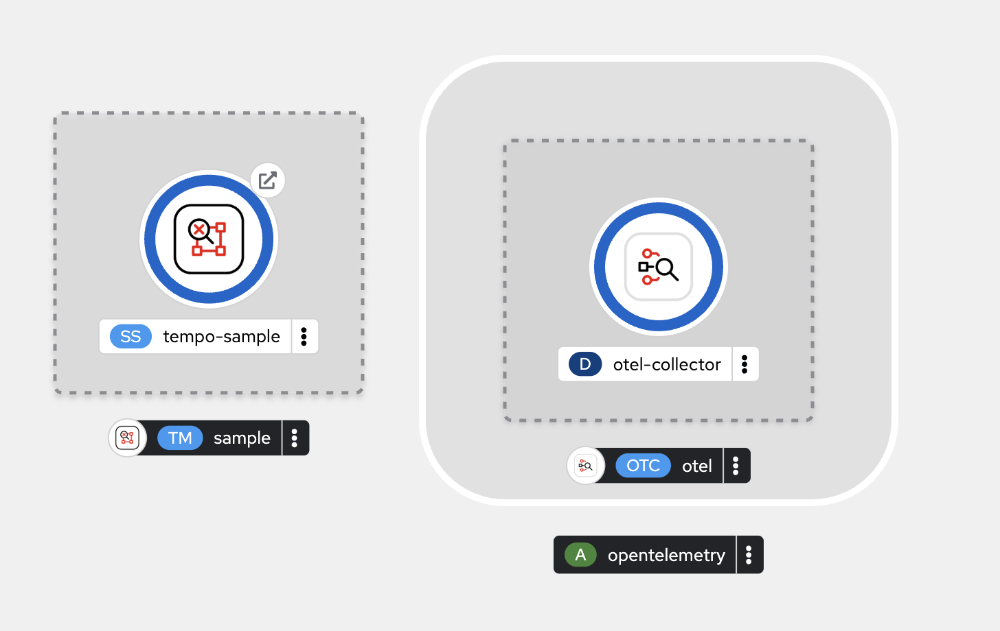
Deploy Sample Application
In this lab, we’ll deploy a simple Todo Java application hosted in Github here: https://github.com/voraviz/quarkus-todo-app/tree/otel.
The application is developed with Quarkus framework and use Quarkus Opentelemetry extension to be able to send out tracing data to the OpenTelemetry Collector you’ve deployed.
-
Open the
pom.xmlfile in https://github.com/voraviz/quarkus-todo-app/tree/otel/todo directory, and search foropentelemetry, you should see a few dependencies added to the application.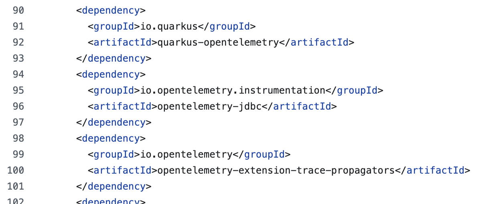
-
Review deployment configuration here: https://github.com/voraviz/openshift-otel/blob/main/todo-kustomize/overlays/otel/kustomization.yaml. Look for the
quarkus.otel.exporter.otlp.endpoint, you should see the Otel Collector endpoint that Todo application will send tracing data to the collector.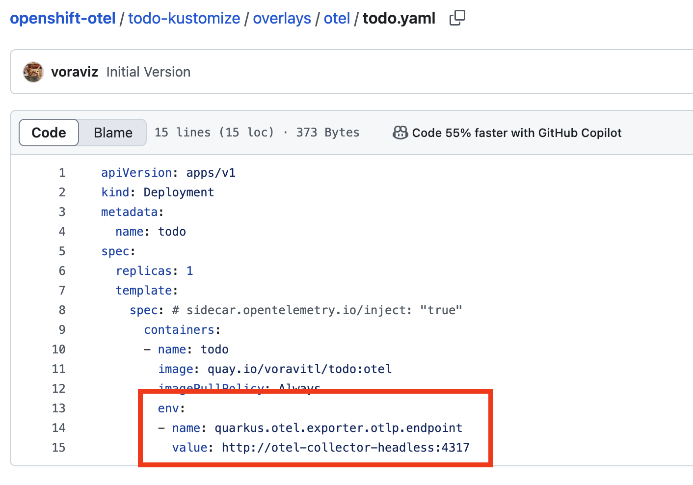
-
Click on the command prompt icon at the top right corner of OpenShift web console to open the web terminal.

-
Run this command to set current project to
userX-otel. Don’t forget to changeuserXto match to your username.oc project userX-otel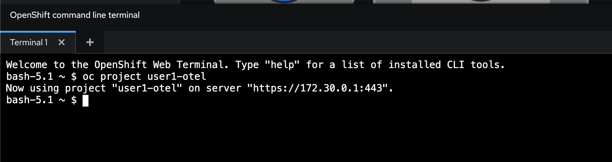
-
Run these commands to clone Git repository from https://github.com/voraviz/openshift-otel.git.
git clone https://github.com/voraviz/openshift-otel.git cd openshift-otel -
Deploy the Todo applciation with command line. Don’t forget to change
userXto match to your username. Then wait until all deployment commpleted.Don’t forget to change userXto match to your username.PROJECT=userX-otel echo $PROJECT oc create -k todo-kustomize/overlays/otel -n $PROJECT oc wait --for condition=ready --timeout=180s pod -l app=todo-db -n $PROJECT oc wait --for condition=ready --timeout=180s pod -l app=todo -n $PROJECT -
Review the deployments in Topology view, wait until all pods status change to Running.
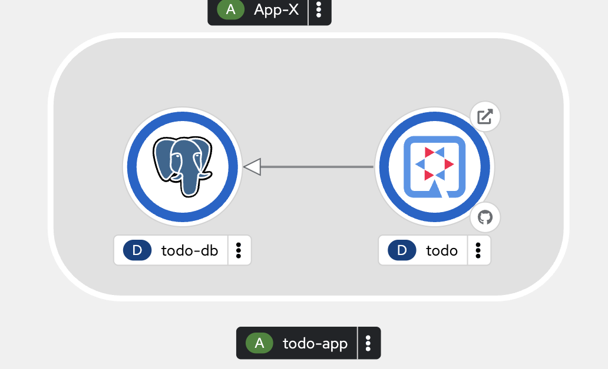
-
Click on the arrow icon of
tododeployment to access Todo application. Then try to add a few tasks, set some task’s status to completed and delete some tasks.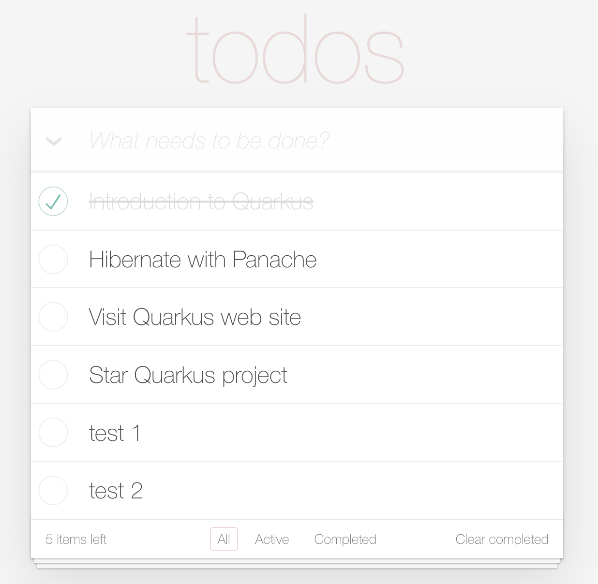
View Application Traces
-
Switch to Administrator perspective. Then go to Observe → Trace menu on the left. Select
userX-otel/samplein Tempo Instance drop-down list and selectdevin Tenant drop-down list.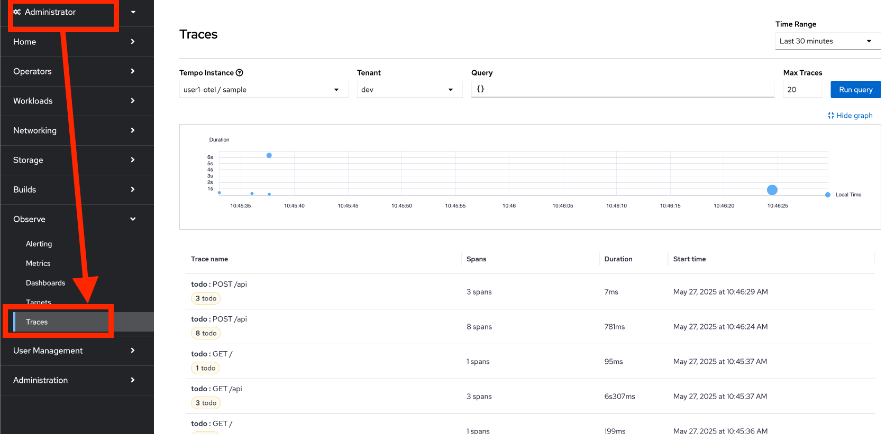
-
Click on the trace to see trace details.
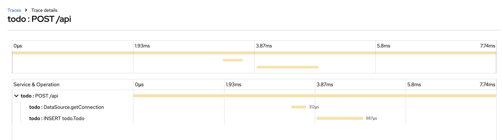
-
Click on
todo:INSERT todo.Todospan to see the span attributes.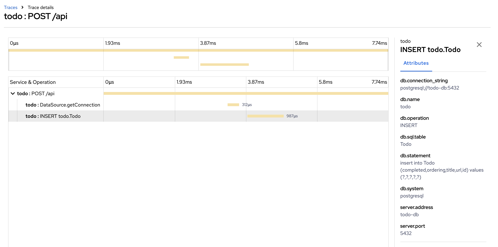
Auto-instrumentation in the Red Hat build of OpenTelemetry Operator
Auto-instrumentation in the Red Hat build of OpenTelemetry Operator can automatically instrument an application without manual code changes. Developers and administrators can monitor applications with minimal effort and changes to the existing codebase.
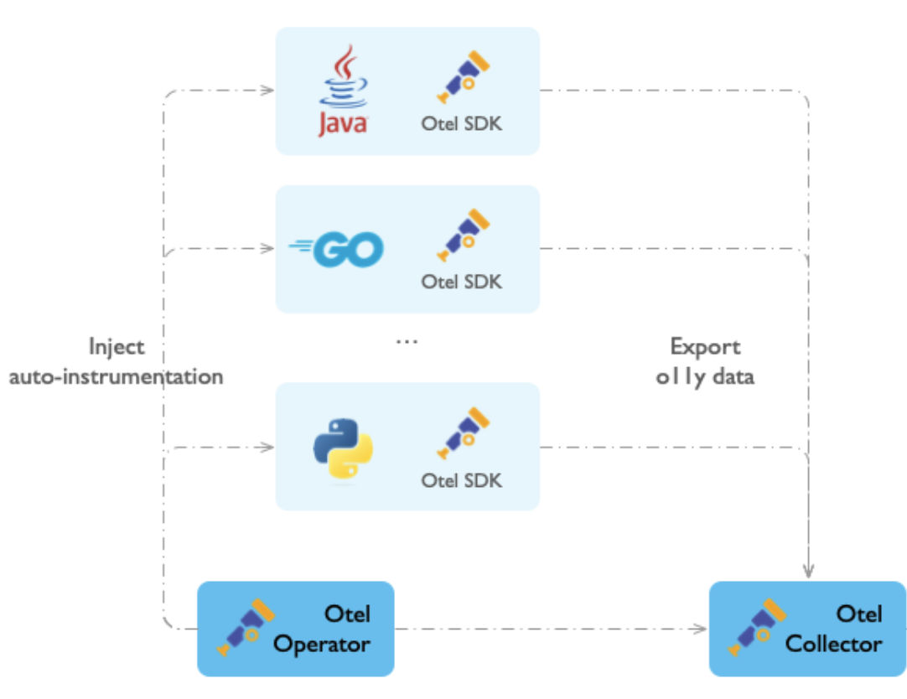
Auto-instrumentation runs as follows:
-
The Red Hat build of OpenTelemetry Operator injects an init-container, or a sidecar container for Go, to add the instrumentation libraries for the programming language of the instrumented application.
-
The Red Hat build of OpenTelemetry Operator sets the required environment variables in the application’s runtime environment. These variables configure the auto-instrumentation libraries to collect traces, metrics, and logs and send them to the appropriate OpenTelemetry Collector or another telemetry backend.
-
The injected libraries automatically instrument your application by connecting to known frameworks and libraries, such as web servers or database clients, to collect telemetry data. The source code of the instrumented application is not modified.
-
Once the application is running with the injected instrumentation, the application automatically generates telemetry data, which is sent to a designated OpenTelemetry Collector or an external OTLP endpoint for further processing.
Auto-instrumentation enables you to start collecting telemetry data quickly without having to manually integrate the OpenTelemetry SDK into your application code. However, some applications might require specific configurations or custom manual instrumentation.
Setup Otel Instrumentation
-
Review
instrumentation.yamlhttps://github.com/rhthsa/developer-advocacy-2025/blob/main/config/otel/instrumentation.yaml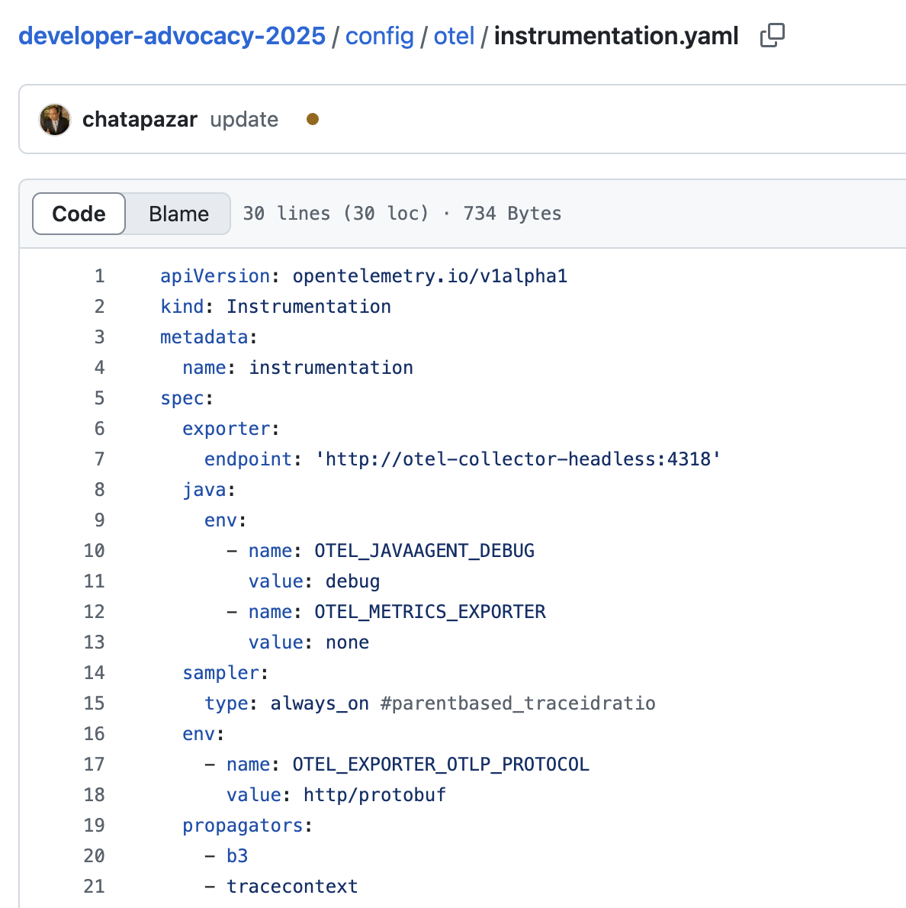
-
Copy
instrumentation.yamland paste in Import YAML, click Create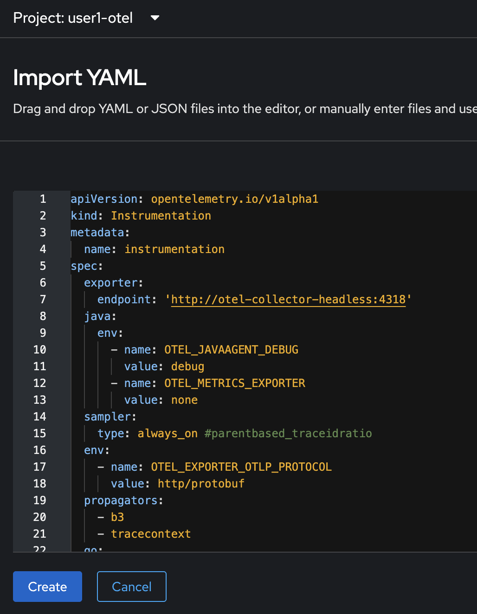
-
Review Instrumentation Details
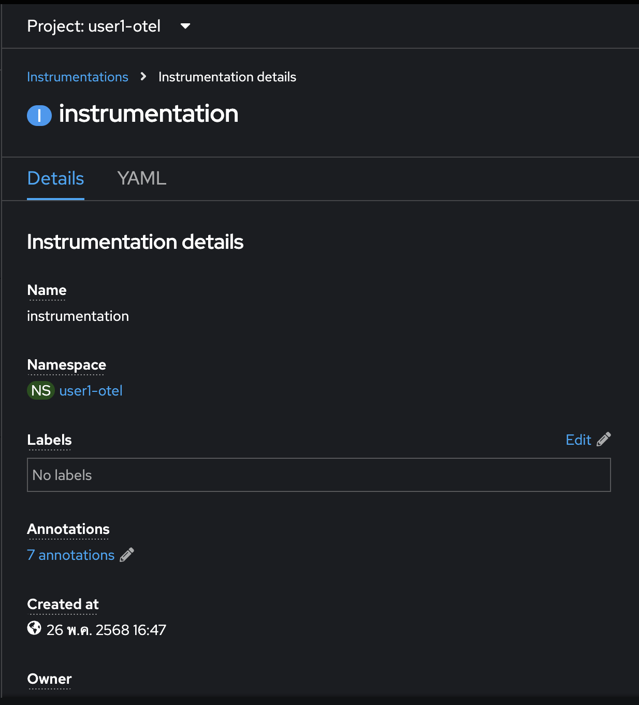
Deploy Appliation for Auto-Instrumentation
-
Deploy Node.js Application, Review deployment from https://github.com/voraviz/openshift-otel/blob/main/config/frontend.yaml
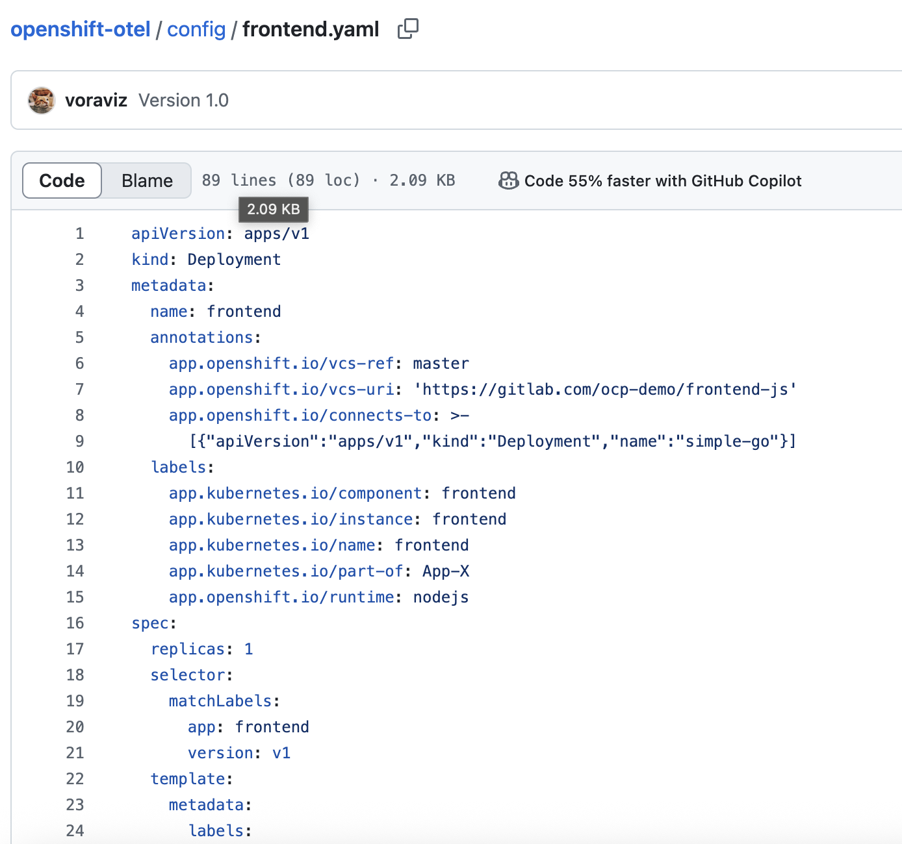
-
Open Web Terminal again, run command to create frontend application (change X to your username)
oc project userX-otel PROJECT=userX-otel cd openshift-otel oc create -f config/frontend.yaml -n $PROJECTOutput
deployment.apps/frontend created service/frontend created route.route.openshift.io/frontend created -
Add Annotate deployment for auto-instrumentation
oc patch deployment/frontend \ -p '{"spec":{"template":{"metadata":{"annotations":{"instrumentation.opentelemetry.io/inject-nodejs":"true"}}}}}' \ -n $PROJECTOutput
deployment.apps/frontend patched -
Verify that auto-instrumentation is working with init-container
oc get po $(oc get po -l app=frontend -o custom-columns='Name:.metadata.name' -n $PROJECT --no-headers) -n $PROJECT -o jsonpath='{.status.initContainerStatuses}'|jqOutput
[ { "containerID": "cri-o://8461a346ece60ba52018f6395b1133298c26d532a0d411a30e5d147bee089fc0", "image": "ghcr.io/open-telemetry/opentelemetry-operator/autoinstrumentation-nodejs:0.53.0", "imageID": "ghcr.io/open-telemetry/opentelemetry-operator/autoinstrumentation- nodejs@sha256:70ba757df71d0596aaccac91f439e8be7f81136b868205e79178e8fd3c36a763", "lastState": {}, "name": "opentelemetry-auto-instrumentation-nodejs", "ready": true, "restartCount": 0, "started": false, "state": { "terminated": { "containerID": "cri-o://8461a346ece60ba52018f6395b1133298c26d532a0d411a30e5d147bee089fc0", "exitCode": 0, "finishedAt": "2025-05-05T07:22:25Z", "reason": "Completed", "startedAt": "2025-05-05T07:22:23Z" } }, "volumeMounts": [ { "mountPath": "/otel-auto-instrumentation-nodejs", "name": "opentelemetry-auto-instrumentation-nodejs" }, { "mountPath": "/var/run/secrets/kubernetes.io/serviceaccount", "name": "kube-api-access-6zqld", "readOnly": true, "recursiveReadOnly": "Disabled" } ] } ] -
Set environment variables
oc set env deploy frontend OTEL_EXPORTER_OTLP_ENDPOINT=http://otel-collector-headless:4318 -n $PROJECT oc set env deploy frontend OTEL_SERVICE_NAME=frontend -n $PROJECT oc set env deploy frontend OTEL_PROPAGATORS=tracecontext,b3 -n $PROJECT -
Deploy Go Application, Review deployment from https://github.com/voraviz/openshift-otel/blob/main/config/simple-go.yaml
Remark: With opentelemetry-operator.v0.119.0-2 and go autoinstrumentation-go:v0.20.0 only work with golang 1.23
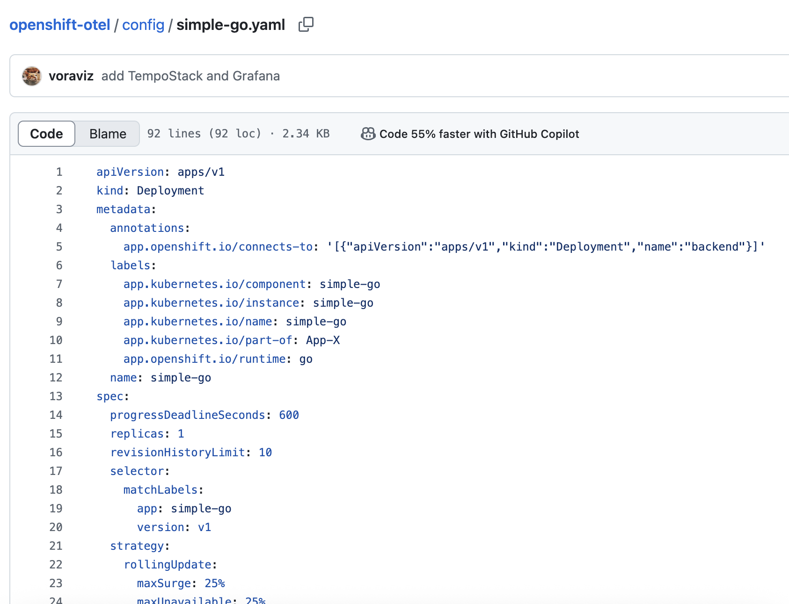
-
Run Command Line to Deploy simple-go app,
oc create -f config/simple-go.yaml -n $PROJECTOutput
deployment.apps/simple-go created service/simple-go created -
Check simple-go deployment https://github.com/voraviz/openshift-otel/blob/main/config/simple-go.yaml
Annotations
template: metadata: annotations: instrumentation.opentelemetry.io/inject-go: "true" instrumentation.opentelemetry.io/otel-go-auto-target-exe: /app/api openshift.io/required-scc: otel-go-instrumentation-sccEnviornment variables
- name: OTEL_EXPORTER_OTLP_ENDPOINT value: http://otel-collector-headless:4318 - name: OTEL_SERVICE_NAME value: simple-go - name: OTEL_GO_AUTO_TARGET_EXE value: /app/api - name: OTEL_PROPAGATORS value: tracecontext,b3 -
Verify that auto-instrumentation is working with container sidecar
oc get po -l app=simple-go -n $PROJECT oc get po $(oc get po -l app=simple-go -o custom-columns='Name:.metadata.name' -n $PROJECT --no-headers) -n $PROJECT -o jsonpath='{.spec.containers[1].name}'Output
NAME READY STATUS RESTARTS AGE simple-go-56f8c644b-w4sxw 2/2 Running 0 7m42s opentelemetry-auto-instrumentation -
Deploy Node.js Application, Review deployment from https://github.com/voraviz/openshift-otel/blob/main/config/backend.yaml
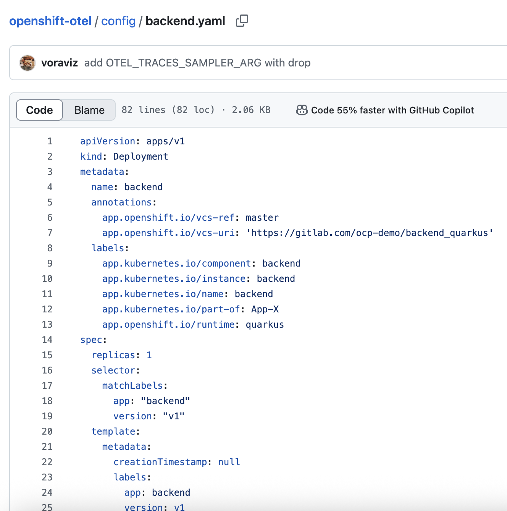
-
Check backend deployment
Annotations
template: metadata: annotations: instrumentation.opentelemetry.io/inject-java: "true"Enviornment variables
- name: OTEL_EXPORTER_OTLP_ENDPOINT value: http://otel-collector-headless:4318 - name: OTEL_SERVICE_NAME value: backend - name: OTEL_PROPAGATORS value: tracecontext,b3 -
Deploy Java RESTful App with Command Line
oc create -f config/backend.yaml -n $PROJECT -
Verify that auto-instrumentation is working with init-container
oc get po $(oc get po -l app=backend -o custom-columns='Name:.metadata.name' -n $PROJECT --no-headers) -n $PROJECT -o jsonpath='{.status.initContainerStatuses}'|jq|head -n 8Output
[ { "containerID": "cri-o://f88eea516f6b51b9bf772b17f88f73ccd920728a8ff4237a855d89a08d2499a9", "image": "ghcr.io/open-telemetry/opentelemetry-operator/autoinstrumentation-java:1.33.6", "imageID": "ghcr.io/open-telemetry/opentelemetry-operator/autoinstrumentation-java@sha256:502d3170177a0676db8b806eba047a520af9bb83400e734fc64f24a593b2ca64", "lastState": {}, "name": "opentelemetry-auto-instrumentation-java", "ready": true, ... -
Check container log
oc logs $(oc get po -l app=backend -o custom-columns='Name:.metadata.name' -n $PROJECT --no-headers) -n $PROJECT | head -n 4Output
Defaulted container "backend" out of: backend, opentelemetry-auto-instrumentation-java (init) INFO exec -a "java" java -Dquarkus.http.host=0.0.0.0 -Djava.util.logging.manager=org.jboss.logmanager.LogManager -cp "." -jar /deployments/quarkus-run.jar INFO running in /deployments Picked up JAVA_TOOL_OPTIONS: -javaagent:/otel-auto-instrumentation-java/javaagent.jar OpenJDK 64-Bit Server VM warning: Sharing is only supported for boot loader classes because bootstrap classpath has been appended -
Review applicaiton deployment in Topology View
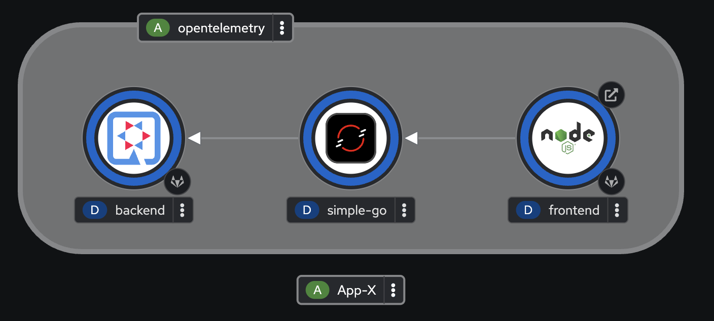
View Auto-Instrument Application Traces
-
Test app
oc project userX-otel curl -v https://$(oc get route frontend -n $PROJECT -o jsonpath='{.spec.host}')Output
* Connection #0 to host frontend-demo.apps.cluster-4thxh.4thxh.sandbox2298.opentlc.com left intact Frontend version: v1 => [Backend: http://simple-go:8080, Response: 200, Body: Backend version:v1, Response:200, Host:backend-68589df886-gtbpx, Status:200, Message: Hello, World] -
Check trace in console with Query {rootServiceName="frontend"}
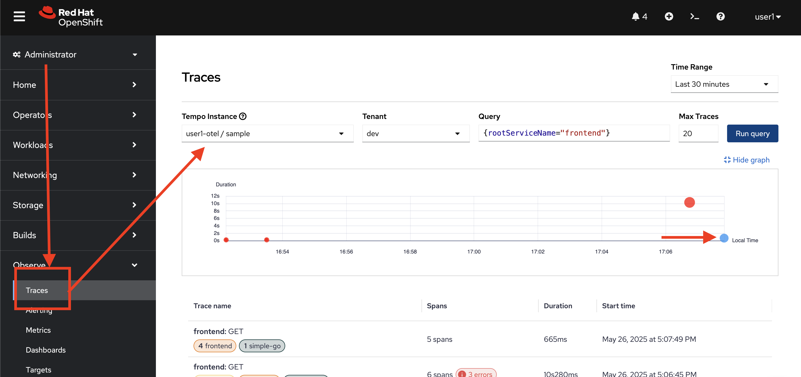
-
Overall Trace
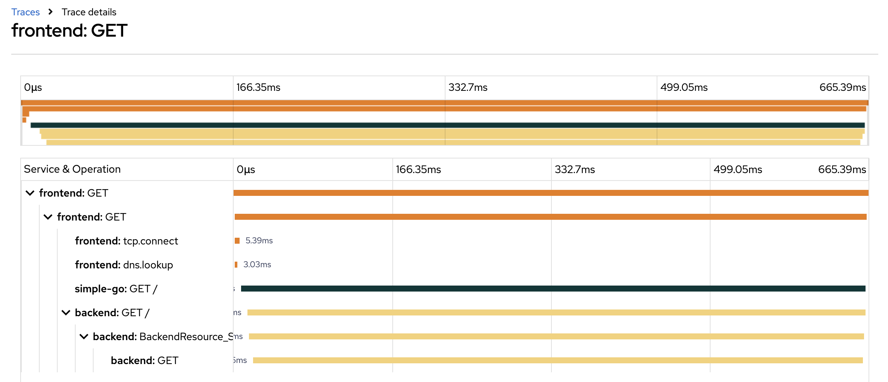
-
Client Information
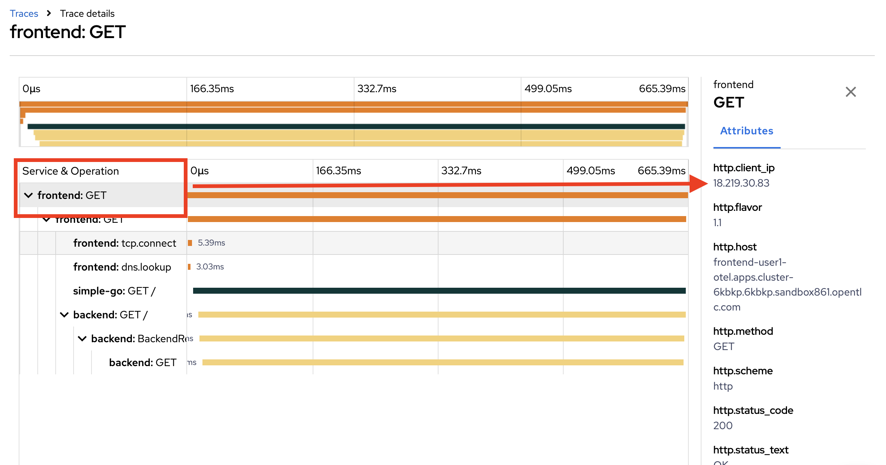
Summary
OpenShift’s distributed tracing provides a major benefit: it allows for tracing requests across microservices, enabling a deeper understanding of application performance and dependencies. This is crucial for monitoring and troubleshooting transactions in complex, distributed systems.
With distributed tracing, software teams can monitor data that passes through complex paths connecting various microservices and data storage. Using distributed tracing tools, software teams track requests and visualize data propagation paths with precision.